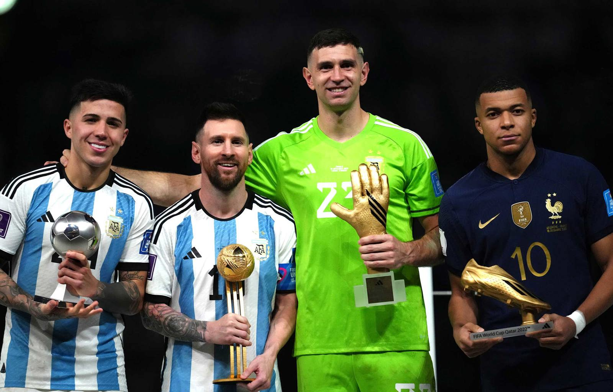
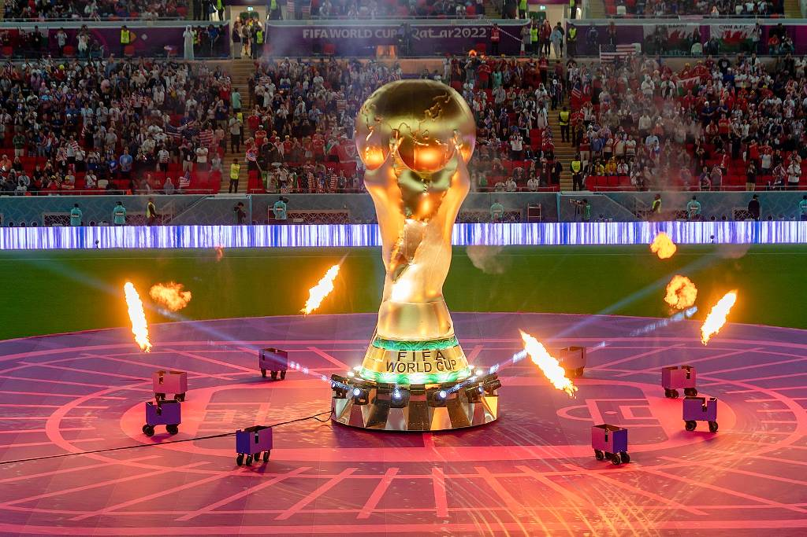
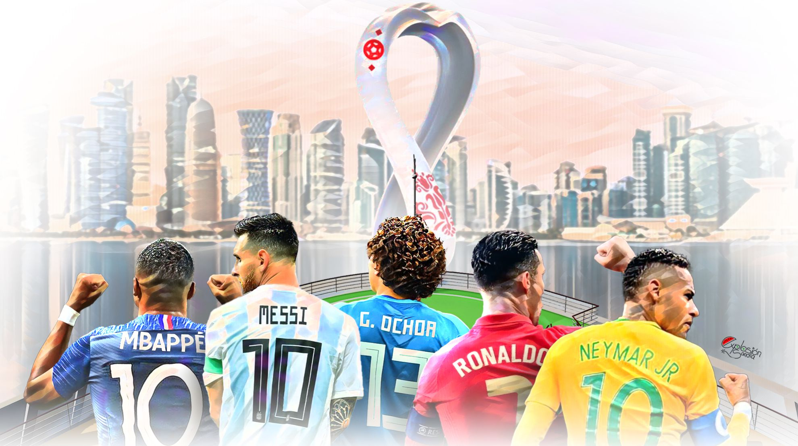
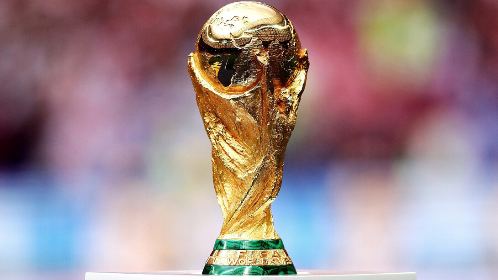
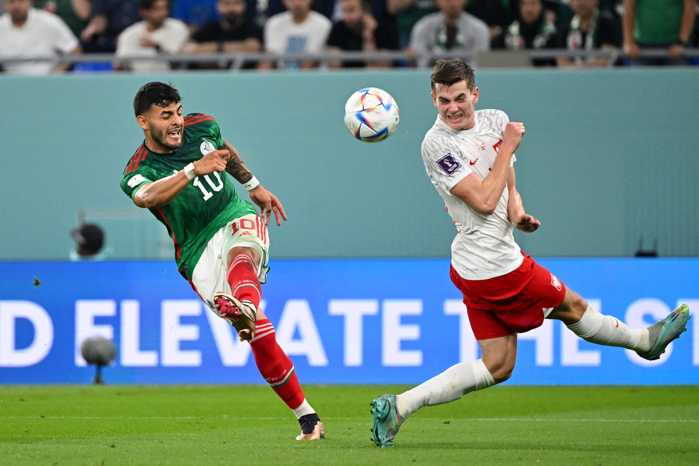
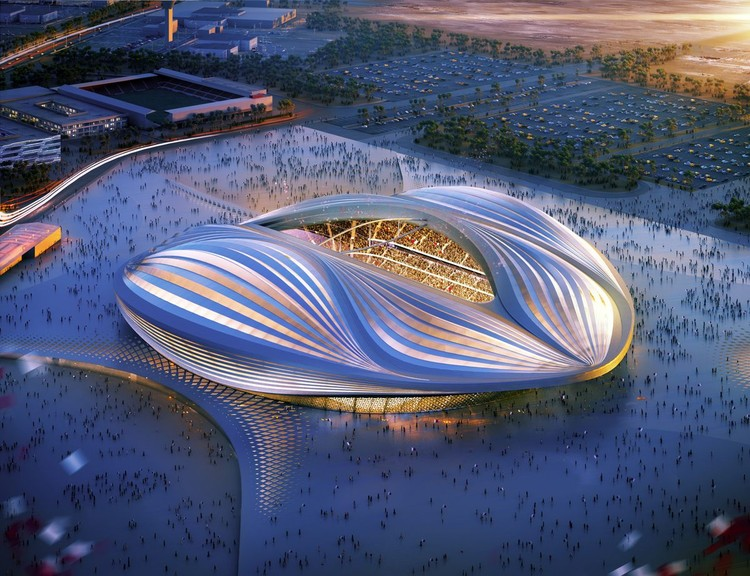
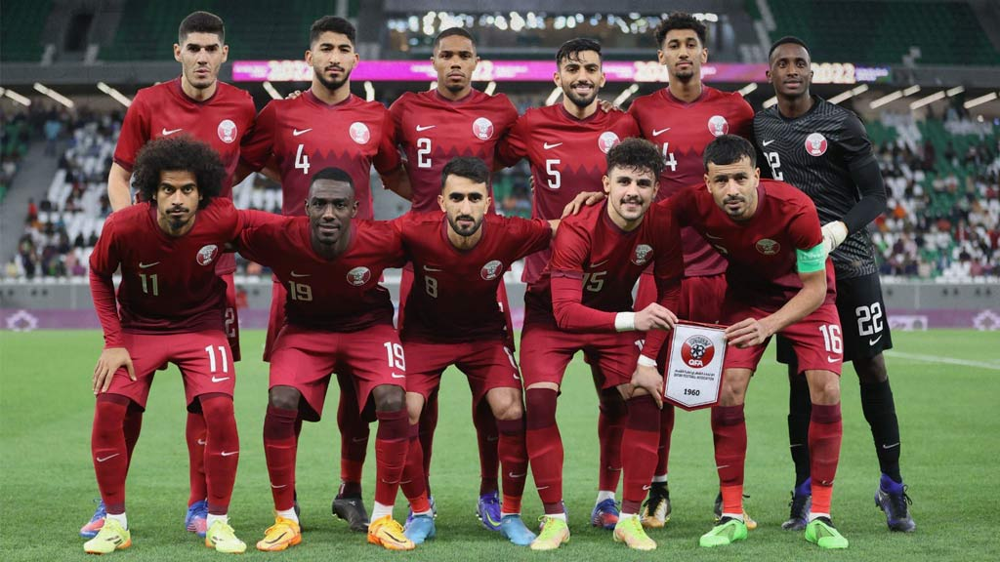

| Año | Sede | Campeón |
|---|---|---|
| 1930 | Uruguay |
🏆 Uruguay 4–2 Argentina
|
| 1934 | Italia |
🇮🇹 Italia 1–0 Austria
🇨🇿 Checoslovaquia 3–1 Alemania
🏆 Italia 2–1 Checoslovaquia (t.s.)
|
| 1938 | Francia |
🇮🇹 Italia 2–1 Brasil
🇭🇺 Hungría 5–1 Suecia
🏆 Italia 4–2 Hungría
|
| 1950 | Brasil |
🏆 Uruguay 2–1 Brasil (Grupo final)
|
| 1954 | Suiza |
🇩🇪 Alemania 6–1 Austria
🇭🇺 Hungría 4–2 Uruguay
🏆 Alemania 3–2 Hungría
|
| 1958 | Suecia |
🇸🇪 Suecia 3–1 Alemania
🇧🇷 Brasil 5–2 Francia
🏆 Brasil 5–2 Suecia
|
| 1962 | Chile |
🇧🇷 Brasil 4–2 Chile
🇨🇿 Checoslovaquia 3–1 Yugoslavia
🏆 Brasil 3–1 Checoslovaquia
|
| 1966 | Inglaterra |
🏴 Inglaterra 2–1 Portugal
🇩🇪 Alemania 2–1 URSS
🏆 Inglaterra 4–2 Alemania (t.s.)
|
| 1970 | México |
🇧🇷 Brasil 3–1 Uruguay
🇮🇹 Italia 4–3 Alemania (t.s.)
🏆 Brasil 4–1 Italia
|
| 1974 | Alemania Federal |
🇩🇪 RFA 1–0 Polonia
🇳🇱 Países Bajos 2–0 Brasil
🏆 RFA 2–1 Países Bajos
|
| 1978 | Argentina |
🏆 Argentina 3–1 Países Bajos (t.s.)
|
| 1982 | España |
🇮🇹 Italia 2–0 Polonia
🇩🇪 Alemania 3–3 Francia (5–4 pen.)
🏆 Italia 3–1 Alemania
|
| 1986 | México |
🇩🇪 Alemania 2–0 Francia
🇦🇷 Argentina 2–0 Bélgica
🏆 Argentina 3–2 Alemania
|
| 1990 | Italia |
🇩🇪 Alemania 1–1 Inglaterra (4–3 pen.)
🇦🇷 Argentina 1–1 Italia (4–3 pen.)
🏆 Alemania 1–0 Argentina
|
| 1994 | EE.UU. |
🇧🇷 Brasil 1–0 Suecia
🇮🇹 Italia 2–1 Bulgaria
🏆 Brasil 0–0 Italia (3–2 pen.)
|
| 1998 | Francia |
🇫🇷 Francia 2–1 Croacia
🇧🇷 Brasil 2–1 Países Bajos (pen.)
🏆 Francia 3–0 Brasil
|
| 2002 | Corea / Japón |
🇩🇪 Alemania 1–0 Corea del Sur
🇧🇷 Brasil 1–0 Turquía
🏆 Brasil 2–0 Alemania
|
| 2006 | Alemania |
🇮🇹 Italia 2–0 Alemania
🇫🇷 Francia 1–0 Portugal
🏆 Italia 1–1 Francia (5–3 pen.)
|
| 2010 | Sudáfrica |
🇳🇱 Países Bajos 3–2 Uruguay
🇪🇸 España 1–0 Alemania
🏆 España 1–0 Países Bajos (t.s.)
|
| 2014 | Brasil |
🇩🇪 Alemania 7–1 Brasil
🇦🇷 Argentina 0–0 Países Bajos (4–2 pen.)
🏆 Alemania 1–0 Argentina (t.s.)
|
| 2018 | Rusia |
🇫🇷 Francia 1–0 Bélgica
🏴 Inglaterra 1–2 Croacia (t.s.)
🏆 Francia 4–2 Croacia
|
| 2022 | Quatar |
🇦🇷 Argentina 3–0 Croacia
🇫🇷 Francia 2–0 Marruecos
🏆 Argentina 3–3 Francia (4–2 pen.)
|
Mundial 2022 – Qatar
Sede: Qatar
Argentina se consagró campeona del mundo tras vencer a Francia en una final histórica, con Lionel Messi liderando al equipo en un torneo memorable.
Fase Final
Argentina 3 - 0 Croacia
Francia 2 - 0 Marruecos
Argentina 3 (4) - (2) 3 Francia
Estadísticas del torneo
| Partidos | Goles | Partidos Jugados | Promedio Goles/Partido |
|---|---|---|---|
| 64 | 172 | 110 | 2.69 |
Galería







Ver más imágenes ↓